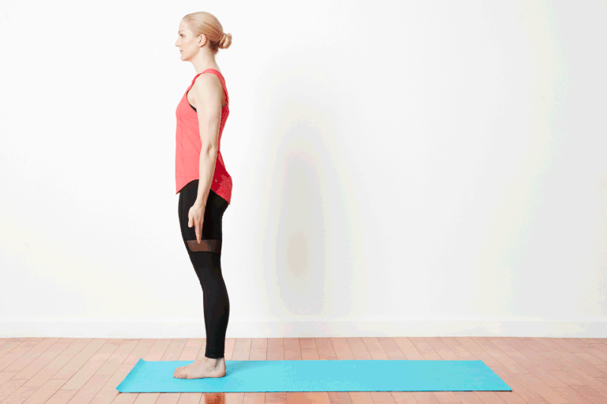
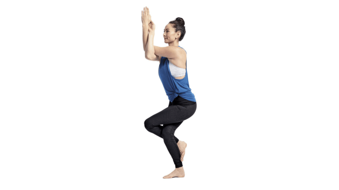
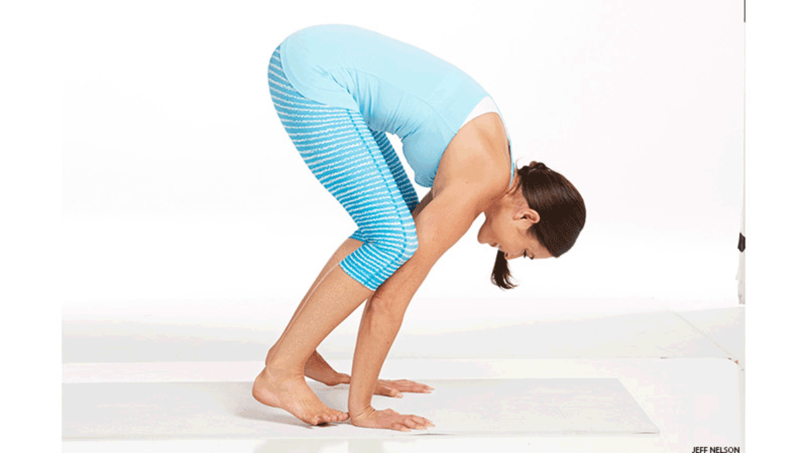
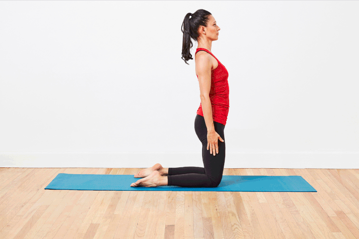

A wave to make india mentally strong and relaxed
Power Mind
Games
Music
Motivation
Yoga
Tadasana
Padamasana
Shashankasana
Vrikshasana
Garudasana
Bakasana
Ustrasana
Previous
Pranayama

Tadasana
Benefits:
The entire body is stretched and therefore the muscles too are stretched giving room for expansion of the muscles in the most simplest way.
The legs become strong at the ankles and the knees. With long periods of practice in this pose, the toning of the leg muscles will help to practice all other standing asanas with ease.
The hips are raised and this brings a good support to the entire back ensuring the spine is expanded giving room for proper flow of prana to the entire body.
Toning of the chest and the shoulders helps in removing any bad postures and results in strong upper back.
Focus should be to keep the spine straight by pulling in the tummy. This eventually helps in toning of the abdominal muscles and lengthens the spine.
Caution:
This yoga pose cannot be beneficial to anyone who finds it difficult to stand for long with feet together or otherwise.
Someone who is suffering severe migraine or giddiness would find this pose a challenge.
Weak muscles of the legs will not help standing in Tadasana even in the most simplest of the pose without variation.
Avoid putting too much strain on the spine by carrying the entire body weight. This can bring more stress to the spine.
Locking the knee can be challenging for long periods and so one must be wary of this.
Padamasana
Benefits:
When mastered, Lotus Pose (Padmasana) allows the practitioner to hold his body completely steady for long periods of time.
As the body and mind are connected and control each other, steadiness of the body brings steadiness of the mind.
This steadiness is the first step towards productive meditation.
Helps to detoxify the entire body of all impurities in a cleansing process, through the fast exhalations.
When practiced along with the basic yoga poses on a daily basis, it keeps the body light and healthy, encouraging good eating habits and other habits.
Improves digestion while cleansing the internal organs.
Caution:
Not to be done if there is any form of knee injury.
Not to be done if there is any form of injury in the ankle or calf.
Not to be done if suffering from any back or spine discomfort.
If suffering from sciatica infections or weakness in the sciatic nerves.
Never do this pose without practicing some stretches for the legs and the spine.
Shashankasana
Benefits:
Increases body awareness with breathing.
As Rabbit Pose is a forward bend pose, it calms the mind and relieves tensions around the neck.
Activates the thyroid glands, keeping the hormones in control.
Relieves the stress bringing fresh blood supply to the crown of the head.
Activates the digestive system
Caution:
Neck, shoulder, arms, back injury
Spondylitis and Vertigo
Hypertension
Pregnancy
Depression
Vrikshasana
Benefits:
Tree pose improves neuromuscular coordination.
Tree pose (Vrksasana) improves balance, endurance and alertness.
Tree pose tones up the leg muscles and ligaments.
Tree pose helps in bone development and proper alignment of the vertebral column as all the muscles are stretched in the same direction.
Relieves stress and anxiety as concentration is needed for balancing the body on one leg in Tree Pose.
Caution:
As Tree Pose (Vrksasana) is a simple yoga pose for balancing, be aware of the body and the surroundings to avoid injury in case one falls.
Tree pose practice should be avoided by patients with arthritis and/or vertigo.
Obese people should avoid this yoga pose as it requires focus on balance.

Garudasana
Benefits:
The hamstring muscles, the quadriceps, calves and the shoulders are stretched. This stretch brings flexibility and strengthens the calves and the ankles.
This pose improves the balance of the body and enhances concentration. It works from the core and hence the core strength is kept in mind here.
This yoga pose stretches the hips, thighs, shoulders and the upper back.
This pose opens all the joints in the body; the shoulders, the elbows, the wrists, the hips, the knees, and the ankles.
Since this asana is a twist, the pose detoxifies your body. It flushes out your kidneys, circulates blood to your reproductive system.
Caution:
Avoid practicing Garudasana in case you have had a recent knee, ankle or shoulder injury.
Eagle pose should not be attempted if you suffer from any of these conditions: Obesity, frequent headaches, high or low blood pressure or asthma.
Pregnant women must avoid practicing Eagle Pose as well.

Bakasana
Benefits
Maximum use of the core muscles and hence also strengthening them.
Strengthens the arms and the shoulders with the balance.
Improves co-ordination with mind, body and breath for better balance.
Brings more awareness to the body, improving balance
Strengthens the hips and the gluteus maximus muscles.
Caution
If any injury to the hips, knees, wrists, or shoulders, then it is best to avoid the practice of Bakasana or Crane Pose. Modifying this pose with props or support is the best option.
A sudden gush of blood towards the head while bending down to get balance, can cause further heaviness in the head and hence best to be avoided by someone suffering from migraine.
To be avoided when suffering from Carpal Tunnel Syndrome.
Not to be done by women who are pregnant or women during their menstrual cycle. Best to take advice from experts here.
Blood Pressure patients, would find it hard to bring balance or focus and hence best to avoid.

Ustrasana
Benefits
Works like magic on the entire spine, giving it the tightness required through the stretch.
Stretches the shoulders and gives them shape and makes them strong.
Opens the chest and tones the muscles around it thus improving the respiration.
Strengthens the thighs and the knees. Generally if one has weak knees the pressure on them can worsen it, but working with blankets below the knees can open the muscles around the knee cap making them gradually strong.
Improves flexibility around the spine and hips.
Caution
Generally a weak back or an injured back may not give you the support to go into the pose.
A neck injur , or someone with spondylitis should surely avoid this.
Someone suffering from Migraine, they will find it difficult to balance the neck down and may not enjoy this pose as the pressure will increase and cause more pain.
Someone under depression should also avoid this pose as the neck thrown back may not be safe at the moment.
Anyone who has high or low blood pressure should perform this yoga pose under the guidance of an experienced yoga teacher or yoga therapist.
Was the Information Useful?
Yes
No
Play now!
×
Browse..